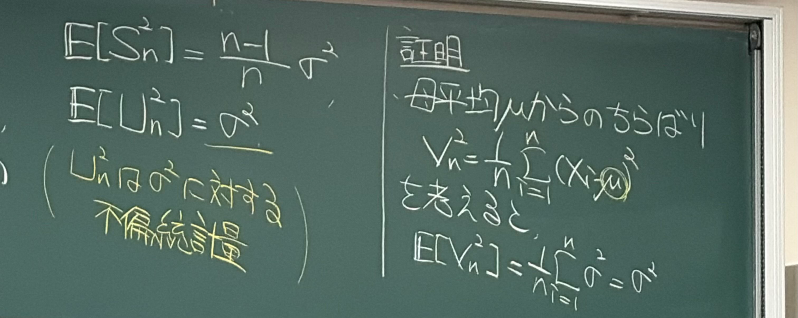
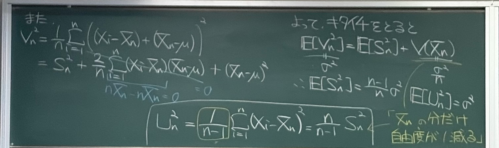

講義を通して言いたいこと
母分散 \(\sigma^2\) は、調べたい母集団の分布で決まる値です。一方、標本分散 \(S_n^2\) は、取り出した \(n\) 個のデータから計算する値で、標本を取り直すたびに変わります。この2枚では、標本分散の期待値が母分散よりどれだけ小さくなるかを求め、その分を補正すると不偏分散になることを証明します。
以下では、記号を定義してから、板書の順に「補助量を作る → 二乗を展開する → 期待値を取る」と進めます。各等号で何を使ったかを、途中式とともに確認します。
母集団と標本を区別して、不偏分散の証明を追う
4・5枚目 · 想定読了時間 約10〜11分
想定読了時間 約2〜3分

解説 4｜記号の定義から、期待値の計算へ
母集団は調べたい対象全体、標本はそこから取り出したデータです。母集団分布に従う確率変数を \(X\) とし、期待値 \(E[\cdot]\) は、その分布の確率を重みとする平均を表します。
母集団と標本の記号
母平均、母分散、母標準偏差を、それぞれ次の式で定義します。
\(X\) は母集団分布に従う1個の確率変数なので、添え字は不要です。標本の各値を区別するときは \(X_1,\ldots,X_n\) と書きます。各 \(X_i\) は \(X\) と同じ分布に従うため、
以下、標本は独立、\(n\ge2\)、\(\sigma^2<\infty\) とします。標本平均と標本分散は、
\(\mu,\sigma^2\) は母集団分布で決まる定数、\(\bar X_n,S_n^2\) は標本を取り直すと変わる量です。
母平均を中心にした補助量の期待値を計算する
方針：求めたい \(E[S_n^2]\) を直接計算する代わりに、母分散の定義を使える補助量
を作り、その期待値を求めます。
2行目は期待値の線形性、3行目は母分散の定義です。次に、\(V_n^2\) を \(S_n^2\) を含む式に書き換えます。
想定読了時間 約7〜9分

解説 5｜板書の等号を、途中式でつなぐ
この1枚の主張：\(V_n^2\) と \(S_n^2\) の差は \((\bar X_n-\mu)^2\) であり、その期待値を引くと \(E[S_n^2]\) が求まる。
4枚目で \(E[V_n^2]=\sigma^2\) が分かりました。ここからは、まず期待値を取らずに、標本ごとに成り立つ式を作ります。
1．標本平均を足して引き、欲しい差を作る
\(S_n^2\) の定義にある \(X_i-\bar X_n\) を出すため、\(X_i-\mu\) に \(-\bar X_n+\bar X_n=0\) を挿入します。
前半は「各データの、標本平均からのずれ」、後半は「標本平均の、母平均からのずれ」です。\(\mu\) と \(\bar X_n\) を同じだと置くのではなく、両者の差を残していることが大切です。
2．二乗を展開し、3つの和に分ける
各 \(i\) について、\((a+b)^2=a^2+2ab+b^2\) を使います。
これを \(V_n^2\) の定義に代入し、和を3つに分けます。
最初の和は定義どおり \(S_n^2\) です。残り2つを、それぞれ整理します。
3．真ん中の和：偏差の和がゼロなので消える
\(\bar X_n-\mu\) は和を取る添字 \(i\) によらないため、和の外へ出せます。
ここで、標本平均の定義を使うと、
したがって、真ん中の和は \(\frac{2(\bar X_n-\mu)}n\times0=0\) です。期待値を取ってゼロになるのではなく、どの標本でもこの段階でゼロになります。また、\(\bar X_n\) を和の外へ出せるのは \(i\) によらないからであり、\(\bar X_n\) が確率変数でなくなったわけではありません。
4．最後の和：同じ値が \(n\) 個ある
\((\bar X_n-\mu)^2\) も \(i\) によらないので、
以上を合わせると、板書左側の展開式が次の形になります。
これは、母平均を中心にした標本の散らばりが、標本平均を中心にした散らばりと、中心同士のずれの二乗に分かれる、という式です。したがって \(S_n^2=V_n^2-(\bar X_n-\mu)^2\) となり、中心を標本平均に合わせた分だけ小さくなります。
5．期待値を取る前に、標本平均についての式を確認する
板書右側では、PDFの2・3枚目で得た \(E[\bar X_n]=\mu\)、\(V(\bar X_n)=\sigma^2/n\) を使っています。この2枚だけで計算を追えるよう、必要な途中式を補います。まず、
分散は一般に \(V(Y):=E[(Y-E[Y])^2]\) と定義されるので、 \(V(\bar X_n)=E[(\bar X_n-\mu)^2]\) です。標本平均の期待値が母平均と等しいのであって、標本平均そのものが毎回母平均と等しいわけではありません。
次に、\(\bar X_n-\mu=\frac1n\sum_i(X_i-\mu)\) を使い、二乗を対角項と交差項に分けます。
\(i\ne j\) のとき、独立性によって積の期待値を分けられます。さらに \(E[X_i]=E[X_j]=\mu\) なので、
対角項は母分散の定義により1個ずつ \(\sigma^2\) です。したがって、
6．板書の「期待値をとると」を、省略せずにつなぐ
手順4の恒等式の両辺に期待値を取り、和の期待値を分けます。
左辺には4枚目で求めた \(E[V_n^2]=\sigma^2\)、右辺の最後には手順5で求めた \(\sigma^2/n\) を代入します。
\(\sigma^2/n\) を左辺へ移し、分母をそろえると、
この結果は、標本を取り直したときの平均について述べています。各標本で \(S_n^2\le V_n^2\) は成立しますが、\(V_n^2\) もランダムなので、各標本で必ず \(S_n^2\le\sigma^2\) になるという意味ではありません。
7．分母を \(n-1\) にすると、なぜ不偏になるのか
期待値に掛かっている \((n-1)/n\) を消したいので、標本分散を \(n/(n-1)\) 倍します。定義を代入すると、
\(n\) は固定した標本数なので、係数 \(n/(n-1)\) を期待値の外へ出せます。
これで、\(U_n^2\) が母分散 \(\sigma^2\) の不偏推定量であることが示せました。この証明に必要なのは独立同分布、有限な母分散、\(n\ge2\) という条件で、正規分布の仮定は使っていません。
板書の「自由度が1減る」と、今の計算のつながり
偏差を \(r_i:=X_i-\bar X_n\) と置くと、手順3より \(r_1+\cdots+r_n=0\) です。したがって、
最初の \(n-1\) 個が決まれば最後の1個も決まります。この制約の下で、自由に動かせる成分の数が \(n-1\) になる、というのがここでの自由度の意味です。観測数そのものは \(n\) 個のままです。
標本平均を同じ標本から求めたことで、偏差に1本の制約が加わりました。その影響を期待値で正確に計算した結果が \(E[S_n^2]=\frac{n-1}{n}\sigma^2\) であり、それを補正した分母が \(n-1\) です。